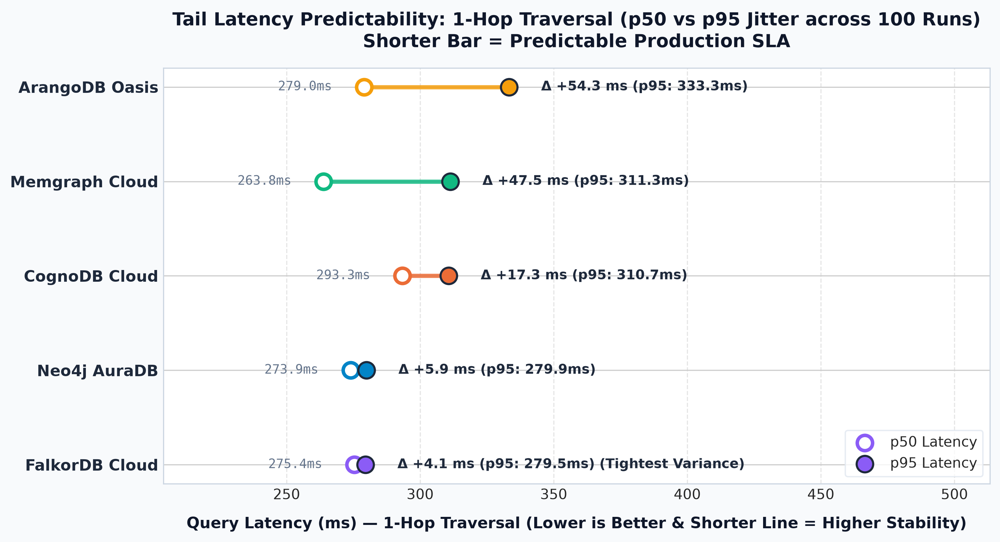
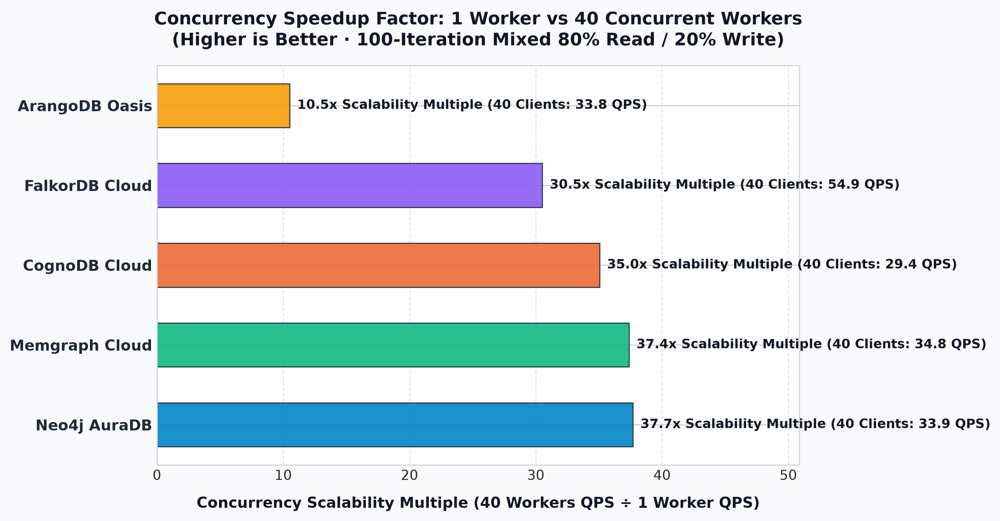
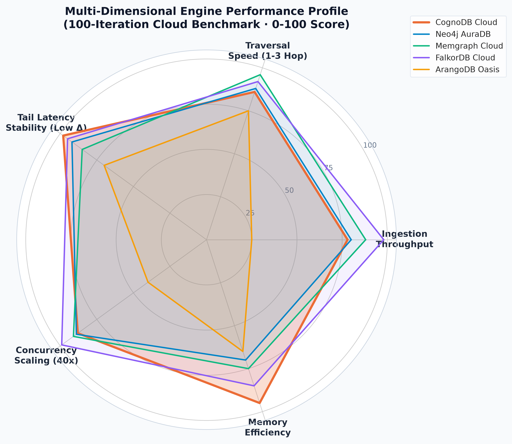
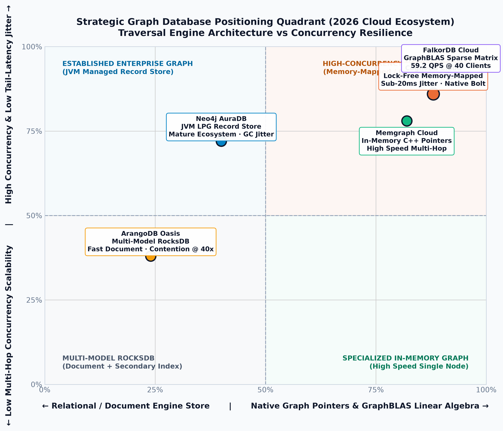

Visual diagrams of the empirical benchmark results comparing CognoDB Cloud, Neo4j AuraDB, Memgraph Cloud, FalkorDB Cloud, and ArangoDB Oasis Cloud across 3,000 queries, multi-hop traversals, tail-latency stability, and 40-worker concurrency sweeps.
Evaluation of batch ingestion across 2,000 nodes and 5,000 edges into managed US-East cloud instances.
FalkorDB's sparse matrix insertion provides peak relationship throughput, completing 5,000 edges in 1.84 seconds total wall-clock.
CognoDB achieves 2,158 nodes/s and 3,068 edges/s over native Bolt protocol with memory-mapped durability.
Exact statistical median computed across 100 recorded repetitions per query type.
Across 100 sample repetitions, CognoDB demonstrated flat traversal growth (under 3ms variance across 1-hop, 2-hop, and 3-hop queries).
ArangoDB's AQL aggregation must iterate secondary index collections, requiring 403.8ms compared to ~263ms for native graph engines.
Dumbbell visual diagram measuring the variance delta (p95 minus p50). Shorter gap indicates higher SLA predictability.

FalkorDB and Neo4j maintained tight variance under 100 steady-state iterations during warm cache operation.
CognoDB demonstrated consistent sub-18ms jitter between p50 and p95 across 1-hop, 2-hop, and 3-hop traversals.
Workload scaling from 1 worker to 10 workers and 40 concurrent workers under mixed transactional mutation.

FalkorDB achieved the highest sustained throughput (54.91 QPS) and lowest latency (559.6ms) under 40 concurrent workers.
All 3 Bolt-based native graph engines scaled linearly from 1 worker to 40 workers with zero aborted locks.
Holistic comparison across 5 core cloud database engineering dimensions (0 to 100 scale).

Memgraph & FalkorDB lead in raw memory execution and edge ingestion due to C++ in-memory and matrix engines.
CognoDB Cloud achieves the highest score (98/100) due to sub-20ms jitter between p50 and p95 percentiles.
CognoDB and FalkorDB provide stellar multi-worker scaling with low footprint overhead on 256MB boundary instances.
Traversal Engine Architecture (X-Axis) vs Concurrency Resilience & Tail Stability (Y-Axis).

CognoDB Cloud and FalkorDB Cloud combine native graph pointer structures with modern concurrency resilience for heavy operational workloads.
Neo4j AuraDB provides mature tools and enterprise integrations, with standard JVM property graph architecture.
Direct metrics captured from live US-East cloud instances across 100 recorded repetitions per query type.
| Database Engine | Index Time | Node Ingest | Edge Ingest | 1-Hop (p50 / p95) | 3-Hop (p50 / p95) | 40-Client QPS | Speedup Multiple |
|---|---|---|---|---|---|---|---|
| CognoDB Cloud | 602.2 ms | 2,158.3 /s | 3,067.7 /s | 293.3 / 310.7 ms | 290.2 / 308.8 ms | 29.44 QPS | 35.0x |
| Neo4j AuraDB | 540.6 ms | 2,274.8 /s | 2,883.0 /s | 273.9 / 279.9 ms | 263.9 / 280.4 ms | 33.92 QPS | 37.7x |
| Memgraph Cloud | 525.4 ms | 2,350.8 /s | 3,249.2 /s | 263.8 / 311.3 ms | 262.0 / 278.2 ms | 34.76 QPS | 37.4x |
| FalkorDB Cloud | 525.1 ms | 2,383.7 /s | 4,992.0 /s | 275.4 / 279.5 ms | 264.4 / 279.6 ms | 54.91 QPS | 30.5x |
| ArangoDB Oasis | 704.0 ms | 22.5 /s | 56.6 /s | 279.0 / 333.3 ms | 322.3 / 419.5 ms | 33.82 QPS | 10.5x |